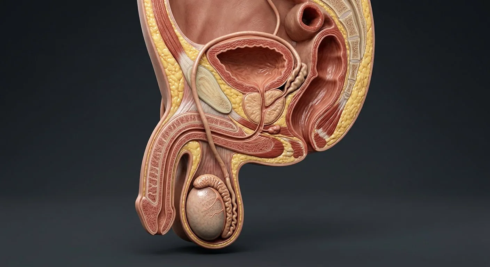
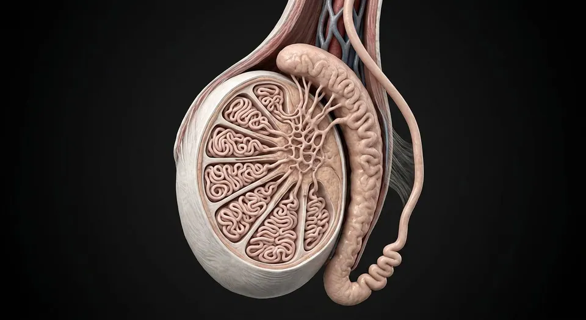
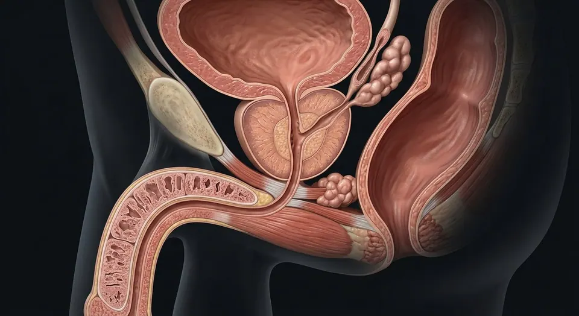
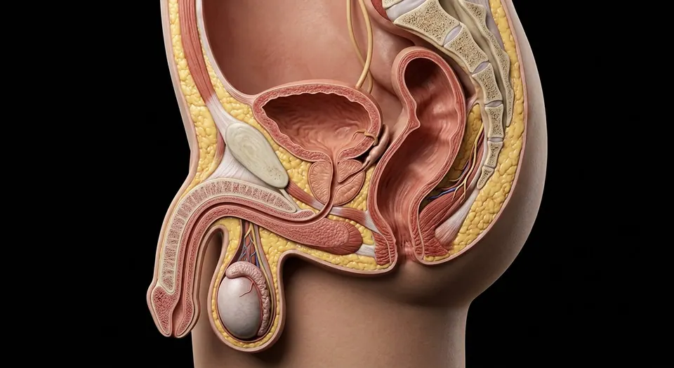

Prostatic transition zoneBladder neck / internal sphincterVas deferensPenis (corpora)Paired corpora cavernosaCavernosal trabeculaeCorpus spongiosumUrethraEpididymisTesticular lobulesMediastinum testisTestis & seminiferous tubulesTunica albugineaTunica vaginalisScrotum & pampiniform plexusBladderSeminal vesicleProstateBulbourethral glandProstatic peripheral zone- 01Bladder
- 02Testis & seminiferous tubules
- 03Epididymis
- 04Vas deferens
- 05Seminal vesicle
- 06Prostate
- 07Bulbourethral gland
- 08Urethra
- 09Penis (corpora)
- 10Scrotum & pampiniform plexus
- 11Tunica vaginalis
- 12Tunica albuginea
- 13Mediastinum testis
- 14Testicular lobules
- 15Bladder neck / internal sphincter
- 16Prostatic transition zone
- 17Prostatic peripheral zone
- 18Paired corpora cavernosa
- 19Corpus spongiosum
- 20Cavernosal trabeculae
How this part of the body works
Spermatogenesis runs for ~74 days in the seminiferous tubules, where Sertoli cells nurse dividing germ cells behind the blood–testis barrier; Leydig cells between tubules make testosterone under LH. Sperm mature and are stored in the epididymis, then travel through the vas deferens, which joins the seminal vesicle duct to form the ejaculatory duct crossing the prostate. Seminal fluid from seminal vesicles (fructose), prostate (citrate, PSA) and bulbourethral glands makes up semen. The scrotum keeps the testis ~2 °C below core temperature.
Read the anatomy, part by part
These 20 structures describe anatomy related to the chapter’s regional illustration. Each entry separates location, function and a clinical point.
Testis & seminiferous tubules
250–300 lobules of coiled seminiferous tubules (total ~250 m) with Sertoli cells and developing germ cells, wrapped in tunica albuginea.
What it doesSpermatogenesis and testosterone production.
Clinical connectionUndescended testis (cryptorchidism) raises infertility and germ-cell tumour risk; torsion is a 6-hour surgical emergency.
Epididymis
A 6 m coiled duct (head, body, tail) applied to the posterior border of the testis.
What it doesSperm maturation, motility acquisition and storage (up to weeks).
Clinical connectionA common site of infection (epididymitis) and of obstruction after vasectomy or infection.
Vas deferens
A thick-walled 45 cm muscular duct from the epididymal tail, through the inguinal canal into the pelvis.
What it doesPropels sperm by powerful peristalsis at emission.
Clinical connectionVasectomy divides it for contraception; sperm granulomas may form at the cut ends.
Seminal vesicle
A coiled sac behind the bladder whose duct joins the vas to form the ejaculatory duct.
What it doesAdds ~60% of semen volume: fructose, prostaglandins and clotting proteins.
Clinical connectionIts fructose is the energy source for sperm and a marker of ejaculatory duct patency.
Prostate
A walnut-sized fibromuscular gland around the urethra below the bladder, with peripheral, central and transition zones.
What it doesSecretes citrate, zinc and PSA that liquefy the seminal coagulum.
Clinical connectionBenign hyperplasia of the transition zone obstructs voiding; most cancers arise in the peripheral zone (felt on DRE).
Bulbourethral gland
Pea-sized glands (of Cowper) in the deep perineal pouch opening into the spongy urethra.
What it doesSecrete pre-ejaculate mucus that lubricates and neutralises urethral acidity.
Clinical connectionPre-ejaculate can carry sperm, which is why withdrawal is unreliable contraception.
Urethra
Prostatic, membranous and spongy (penile) parts, ~20 cm long.
What it doesCommon channel for urine and semen.
Clinical connectionStrictures commonly follow catheterisation or gonococcal infection at the bulbar urethra.
Penis (corpora)
Two corpora cavernosa and one corpus spongiosum enclosing the urethra, ending in the glans.
What it doesErection by parasympathetic NO-mediated vasodilatation and venous occlusion; ejaculation by sympathetic emission plus somatic expulsion.
Clinical connectionPDE5 inhibitors potentiate the NO–cGMP pathway; priapism over 4 hours threatens the corpora.
Scrotum & pampiniform plexus
Skin and dartos muscle housing the testes, with the pampiniform venous plexus acting as a counter-current cooler.
What it doesKeeps spermatogenesis at ~34 °C.
Clinical connectionPampiniform varices (varicocele, usually left) cause a "bag of worms" and impaired fertility.
Bladder
Sits above the prostate; the vas and ureters pass behind it.
What it doesUrinary reservoir sharing the urethral outlet.
Clinical connectionAn enlarged prostate elevates its floor, seen as a raised "J" of the ureteric orifices at cystoscopy.
Tunica vaginalis
Serous covering with visceral and parietal layers.
What it doesAllows mobile testis within scrotum.
Clinical connectionFluid accumulation in the cavity forms a hydrocele.
Bladder neck / internal sphincter
Smooth-muscle outlet superior to prostate.
What it doesCloses during emission to limit retrograde ejaculation.
Clinical connectionBladder-neck dysfunction may affect voiding.
Paired corpora cavernosa
Two dorsal longitudinal erectile cylinders that unite in shaft and separate proximally as crura.
What it doesPrimary rigid erectile compartment.
Clinical connectionFibrous tunica helps compress emissary venous outflow.
Tunica albuginea
Dense white capsule under tunica vaginalis.
What it doesPartitions testis into lobules via septa.
Clinical connectionTraumatic rupture may require urgent evaluation.
Prostatic transition zone
Zone surrounding proximal prostatic urethra.
What it doesContains glandular ducts and fibromuscular tissue.
Clinical connectionCommon origin of benign prostatic enlargement.
Corpus spongiosum
Single ventral erectile column surrounding spongy urethra.
What it doesEngorges without compressing urethral lumen closed.
Clinical connectionIts distal expansion is the glans penis.
Mediastinum testis
Posterior thickening of albuginea containing rete testis.
What it doesOrganizes lobules and duct outflow.
Clinical connectionImportant landmark in testicular ultrasound.
Prostatic peripheral zone
Posterior-lateral zone palpable through rectum.
What it doesProduces prostatic secretions.
Clinical connectionMost prostatic cancers arise in this zone.
Cavernosal trabeculae
Smooth-muscle and connective-tissue struts bordering interconnected blood sinusoids.
What it doesRelaxation permits filling of cavernous lacunae.
Clinical connectionVascular dysfunction can impair rigidity.
Testicular lobules
Septa divide testis into lobules containing seminiferous tubules.
What it doesCompartmentalize sperm production.
Clinical connectionGerm-cell tumors often distort intratesticular architecture.
Five questions about Male reproductive system
Short answers grounded in the structures described above. Use the illustrated guide for anatomical context.
How is sperm produced and transported?
Sperm develop in seminiferous tubules of the testes, mature in the epididymis and pass through the vas deferens and ejaculatory ducts into the urethra.
What do the prostate and seminal vesicles contribute?
The seminal vesicles and prostate add fluids to semen. Their ducts join the sperm outflow route near the prostate before ejaculation.
What is the testis & seminiferous tubules?
250–300 lobules of coiled seminiferous tubules (total ~250 m) with Sertoli cells and developing germ cells, wrapped in tunica albuginea. Function: Spermatogenesis and testosterone production.
Where is the vas deferens located?
A thick-walled 45 cm muscular duct from the epididymal tail, through the inguinal canal into the pelvis. Function: Propels sperm by powerful peristalsis at emission.
What is the function of the prostate?
Function: Secretes citrate, zinc and PSA that liquefy the seminal coagulum. A walnut-sized fibromuscular gland around the urethra below the bladder, with peripheral, central and transition zones.
Related anatomy guides
Follow these connected structures and body systems in the illustrated atlas.

Testis & epididymis — microanatomyThe sperm-production organ from tunica through seminiferous tubule to rete, efferent ducts and epididymal tail.↗
Prostate, ducts & penisProstatic zones and the urinary–ejaculatory crossing: urethra, verumontanum, ducts, seminal vesicles and erectile bodies.↗
Male pelvis & perineumThe male pelvic floor in sagittal section: bladder, prostate and urethra in front, rectum and anal canal behind, and the muscular sheet that holds them up.↗ Urinary bladderA detrusor-muscle reservoir with a smooth trigone and a two-stage sphincter.↗
Urinary bladderA detrusor-muscle reservoir with a smooth trigone and a two-stage sphincter.↗Further reading
General anatomy references and related source chapters for continued study. These links do not make the digital illustrations clinical images or certify every anatomical variant.
This educational page is not medical advice and has not undergone formal clinical peer review. Spotted an error? Contact the editor.
Open the realistic interactive plate, label lines, focus view and self-test.